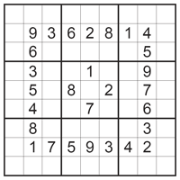
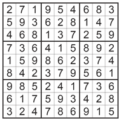

Welcome again to FizzBuzzy! This web application aims to teach the basics of computer science to the budding programmer. Although this site intended for elementary and middle school students, anyone interested can follow along. We hope to present information and content in a consice and easy to follow manner.
Lessons will be provided in a slideshow format, so you can learn at your own pace!
A note on system requirements: You must have Javascript enabled to use this site, and a recent compatible browser (IE 10+, and the latest versions of Firefox, Google Chrome or Safari are recommended.) If you don't know what this means, you probably don't have to worry about it!
Ok, now that we have some of the pre-requisites out of the way, lets dive right in! Press the right arrow key to continue onward! (You can use the left and right arrow keys to navigate through slides.)
RESERVED FOR NAVIGATION MENU. Need to add more pictures and shiet
"Computer Science is no more about computers than astronomy is about telescopes."
-Edsger Dijkstra
The above is a quote from a famous Computer Scientist named Edward Dijkstra (pronounced like "die-k-struh"), and sums up the heart of the field of Computer Science. While Computer Science is obviously heavily tied to computers, its really the study of problem solving. You can even think of it as the art of solving complex puzzles. That may seem a little bit strange, but we'll attempt to prove that statement with an example.
Let's talk about the Sudoku puzzle. You might have seen these popular puzzles before, either in newspapers or being played on electronic devices, and some of you may be proud self-proclaimed Sudoku masters. To summarize for the non initiated, the basic rules of Sudoku are as follows:
1. You are given a 9x9 grid with several given numbers.
2. The goal of the game is to place the numbers 1 through 9 in the empty squares so that each row, each column, and each 3x3 sub square contains only each number once.
If these rules sound simple, well, thats because they are. Of course, solving these puzzles are easier said than done, and require a lot of logic and thinking.

Let's talk about the Sudoku puzzle. You might have seen these popular puzzles before, either in newspapers or being played on electronic devices, and some of you may be proud self-proclaimed Sudoku masters. To summarize for the non initiated, the basic rules of Sudoku are as follows:
1. You are given a 9x9 grid with several given numbers.
2. The goal of the game is to place the numbers 1 through 9 in the empty squares so that each row, each column, and each 3x3 sub square contains only each number once.
If these rules sound simple, well, thats because they are. Of course, solving these puzzles are easier said than done, and require a lot of logic and thinking.

So how would you go about solving the puzzle? You would probably use the numbers given to you as a starting point, and from then on use trial and error to try and fill in the other numbers. This is a fair approach, and in fact, if you were to write a computer program to solve Sudoku puzzles, this is how the program would go about it. The program would make guesses and systematically check each number in each position and check to see whether or not it broke any rules. If it did, it would scrap its current solution and try again.
If this seems like an inefficient approach, well it is. And this is where Computer Science ties in. Computer Science is all about solving puzzles like this. How could we design a program that solves Sudoku in a faster, smarter way? Of course for small puzzles like this 9x9 square, our computers are powerful enough to solve it in under a second, even with our naive approach. But what about a 16x16 square? A 49x49 square? A 100x100 square? As the size of the problem increases, the time needed to solve it increases dramatically, as the computer would need to make more and more guesses before arriving at the correct solution.

Now your might be thinking, "That's cool and all, but why do we care about being able to solve Sudoku puzzles quickly?" Well, we didn't choose the Sudoku example randomly. The underlying problem of solving Sudoku is actually tied to a plethora (plethora means "a wide range of") of other problems. Many of these problems have real world applications, like finding the shortest path from one destination to another, or designing strong encryption algorithms (we'll explain what an algorithm is in more detail later). The important thing is, all these problems can actually be "reduced" to the SAME problem, the very same one that is at the heart of solving Sudoku. So if you come up with a particularly efficient and "smart" way of solving Sudoku, you can translate that technique to generating simulations of protein folding and potentially help cure cancer! Easier said then done, right?
Whether or not you can create an efficient way to solve Sudoku is one of the greatest unanswered mysteries in Computer Science and Mathematics, and is known as the P vs NP problem. That's a little bit complicated for us at the moment, so we'll save that for a later chapter. We have glossed over MANY important details in regards to the P vs NP problem, and our explanations here will probably make a Mathemetician cringe, but what's a Mathemetician doing reading this anyways... But we hope to have convinced you that Computer Science is the science of puzzle solving, and can be a whole lot of fun. Before we end this lesson, we'll move on to a hands on example, so press the right arrow key to continue on!
Let's do some programming! We will be writing a simple program that prints the message "Hello, world!". This is a long held Computer Science tradition, and is the typically the first program every CS student writes. Consider it a rite of passage!
In the box above, type the words exactly as shown, starting from the word "print". Make sure you type the quotes too!
print "hello, world"
Then click Here
stuff